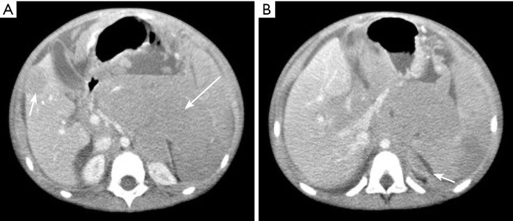
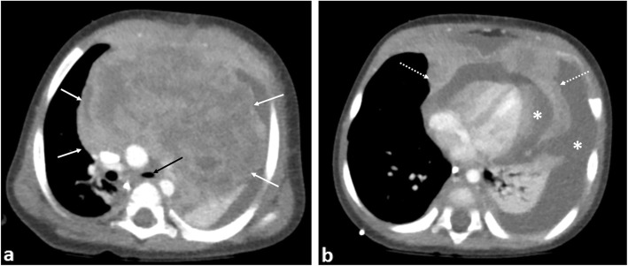
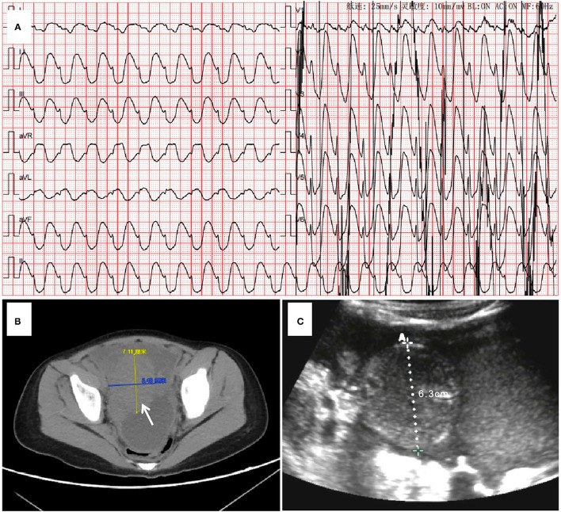

6183 — Hội chứng ly giải u ở trẻ: ngưỡng Cairo–Bishop và khi nào lọc máu / Paediatric tumour lysis syndrome
Tags: pattern:than-to pattern:vo-than-tang-am pattern:hoai-tu-ong-than vung:than vung:o-bung vung:trung-that protocol:sieu-am-than protocol:CT-bung score:Cairo-Bishop score:CTCAE
Mức chắc chắn (certainty): tổng hợp y văn (literature synthesis) — ngưỡng lấy từ Cairo–Bishop 2004 (trích qua CMAJ 2023, PMC10089626), số liệu nhi từ đoàn hệ TLS ở trẻ ung thư huyết học 2026 (Front Oncol, PMC13008734), đoàn hệ CKRT nhi 2023 (Front Oncol, PMC10471890), đoàn hệ NHL nhi 2024 (BMC Pediatr, PMC10829167) và tổng quan rasburicase liều đơn 2025 (Hematol Rep, PMC12732761). Ba ca có ảnh đều là bệnh nhi.
Câu chốt: TLS là cấp cứu chuyển hoá, không phải cấp cứu hình ảnh — phim thường bình thường trong khi K⁺/phosphate/acid uric quyết định sống còn trong 24–48 giờ. Vai trò thật của CĐHA chỉ có ba: (1) đo gánh nặng u trước điều trị (Burkitt ổ bụng, u trung thất, gan lách hạch to, thâm nhiễm thận) để phân tầng nguy cơ; (2) loại trừ ứ nước khi trẻ vô niệu; (3) theo dõi di chứng (thận teo, calci hoá thận muộn). Chỉ số dự báo AKI nặng tốt nhất trong một đoàn hệ nhi là mức tăng phosphate mỗi 24 giờ > 2,6 mg/dL (AUC 0,839) — không phải acid uric.
1. Tổng quan bệnh học – cơ chế hình ảnh
1.1 TẠI SAO TLS gây suy thận và loạn nhịp
- Tế bào u (đặc biệt Burkitt, B-ALL, lymphoma tế bào T, AML) phân chia nhanh, nhân giàu acid nucleic → khi hoá trị hiệu quả (hoặc tự phát — 56% trong đoàn hệ nhi ở PMC13008734), hàng tỷ tế bào vỡ cùng lúc.
- K⁺ đổ ra → loạn nhịp/tử vong nhanh nhất (đỉnh trong vài giờ).
- Phosphate đổ ra → kết hợp Ca²⁺ thành calcium phosphate lắng trong ống thận → AKI + hạ calci (hạ calci gây co giật, QT dài).
- Acid nucleic → hypoxanthine → xanthine → acid uric. Acid uric ít tan, đặc biệt trong nước tiểu toan → tinh thể urat bít ống thận + co mạch thận → AKI.
- AKI dẫn đến ứ K⁺, ứ phosphate, ứ acid → vòng xoáy; quá tải dịch khi bù dịch nhiều → phù phổi (nguyên nhân tử vong đã ghi nhận trong đoàn hệ nhi).
1.2 TẠI SAO hình ảnh thường "bình thường" (vật lý)
| Phương thức | Vì sao thấy/không thấy tổn thương |
|---|---|
| Siêu âm thận | Tinh thể vi thể không tạo tín hiệu; chỉ khi phù nhu mô do AKI mới thấy thận to, vỏ tăng âm (nước thay vỏ — cùng lý do với mọi AKI nhu mô), RI ≥ 0,70. Không ứ nước là điểm phân biệt với nguyên nhân tắc nghẽn |
| CT không cản quang | Tinh thể không làm thay đổi đậm độ đáng kể ở giai đoạn cấp; chỉ calci hoá thận muộn mới tăng đậm độ (> 100 HU). CT có giá trị đo gánh nặng u và tìm chèn ép niệu quản, không để chẩn đoán TLS |
| MRI | Phù nhu mô thận → T2 tăng, T1 giảm, thận to; không đặc hiệu. MRI hữu ích để đánh giá thâm nhiễm thận do u và không dùng gadolinium khi AKI |
| X-quang ngực | Trung thất rộng, khối — dấu hiệu gánh nặng u (nguy cơ TLS cao), không phải dấu hiệu TLS |
| Siêu âm muộn | Bóng tăng âm ở tháp thận ± bóng lưng = calci hoá thận sau TLS (di chứng, thường sau nhiều tuần–tháng) |
Điểm cốt lõi: TLS là biến chứng sinh hoá; một CT/siêu âm bình thường không loại trừ và một thận "hơi to" không xác nhận. Chẩn đoán nằm ở 4 xét nghiệm máu.
1.3 Ngưỡng định lượng bắt buộc nhớ
| Đại lượng | Ngưỡng / con số | Nguồn |
|---|---|---|
| Cairo–Bishop — TLS xét nghiệm (≥ 2 tiêu chí trong 3 ngày trước đến 7 ngày sau hoá trị) | Acid uric ≥ 476 µmol/L (8 mg/dL) hoặc tăng 25% · K⁺ ≥ 6,0 mmol/L hoặc tăng 25% · Phosphate ≥ 1,45 mmol/L hoặc tăng 25% · Ca²⁺ ≤ 1,75 mmol/L hoặc giảm 25% | Cairo–Bishop 2004, qua PMC10089626 |
| TLS lâm sàng | TLS xét nghiệm + creatinin ≥ 1,5 × ULN hoặc co giật hoặc loạn nhịp | Cairo–Bishop 2004 |
| Tỷ lệ TLS | 3–30% leukemia/NHL; 3–40% ở ung thư huyết học nguy cơ cao; 4,4–53% ở các đoàn hệ NHL nhi | PMC13008734 · PMC10089626 · PMC10829167 |
| AKI trong TLS | 5–40%, tới 75% khi gánh nặng u lớn | PMC13008734 |
| Tần suất tiêu chí xét nghiệm (đoàn hệ nhi) | Tăng phosphate 94% > tăng acid uric > tăng K⁺ chỉ 14% | PMC13008734 (Howard–Pui) |
| Lọc máu | 2–4% chung; nhưng 62% (31/50) trong đoàn hệ nhi có TLS nặng/ AKI nặng | PMC13008734 |
| Tử vong do TLS | ~1,7% ở nhóm nguy cơ cao; lịch sử 15–35% | PMC13008734 · PMC10471890 |
| Δ phosphate/24 giờ | > 2,6 mg/dL → AKI nặng (pRIFLE-F): AUC 0,839, Se 75%, Sp 85,7% | PMC13008734 |
| Phosphate đỉnh (AKI nặng vs nhẹ) | 15 vs 9,35 mg/dL; mức tăng 271% vs 92% | PMC13008734 |
| CKRT ở trẻ | 20/222 (9%); chỉ định hay gặp nhất là tăng phosphate; điện giải về bình thường trong 6–12 giờ; trung vị 2 ngày; sống 1 năm 90% | PMC10471890 |
| Nước tiểu mục tiêu | 100 mL/m²/giờ (≈ 2,4 L/m²/ngày) | PMC10089626 |
| Rasburicase | Liều cấp phép 0,2 mg/kg/ngày × 5 ngày; liều đơn 0,15–0,2 mg/kg (hoặc liều cố định ≥ 3 mg, 6 mg đáp ứng tốt hơn) | PMC12732761 |
| Chống chỉ định | Thiếu G6PD — phải sàng lọc trước liều đầu (tan máu cấp, methaemoglobin) | PMC12732761 |
2. Mẫu hình + chẩn đoán phân biệt theo vị trí (gamut)
Mẫu hình chung: trẻ mới chẩn đoán u lympho/leukemia gánh nặng lớn (hoặc 24–48 giờ sau liều hoá trị đầu) → vô niệu/thiểu niệu, K⁺ cao, phosphate cao, Ca²⁺ thấp, acid uric cao, creatinin tăng → siêu âm thận to hai bên, vỏ tăng âm, không ứ nước.
| Vị trí / mẫu hình | Gamut theo bối cảnh |
|---|---|
| Thận to hai bên, không ứ nước | TLS/hoại tử ống thận do tinh thể · thâm nhiễm thận do leukemia/lymphoma · AKI trước thận (nôn, sepsis, rò mao mạch) · AKI do thuốc (cisplatin, ifosfamide, aminoglycoside, cản quang) |
| Thận to + ứ nước hai bên | Chèn ép niệu quản bởi khối sau phúc mạc (Burkitt, neuroblastoma) · sỏi acid uric · cục máu đông · bàng quang thần kinh |
| Khối ổ bụng lớn (Burkitt, mạc treo, hồi manh tràng) | Gánh nặng u → TLS nguy cơ cao · lồng ruột do lymphoma (bài 6178) · áp-xe ruột thừa · nang mạc treo |
| Trung thất trước rộng | Lymphoma lymphoblastic/ Hodgkin → TLS + hội chứng tĩnh mạch chủ trên · u tế bào mầm · u tuyến ức · đám rối thần kinh |
| Tháp thận tăng âm ± bóng lưng (muộn) | Calci hoá thận sau TLS · nephrocalcinosis do cường cận giáp · tổn thương thận do thuốc · tăng oxalate |
3. Bảng so sánh phân biệt (ma trận đối chiếu)
| Thực thể (entity) | Hình ảnh điển hình | Chốt vào (rule-in) | Chốt loại (rule-out) | Gợi ý xác nhận |
|---|---|---|---|---|
| TLS (ly giải u) | Thận to hai bên, vỏ tăng âm, không ứ nước; u/hạch lớn ở ổ bụng hoặc trung thất; CT/MRI không có tổn thương đặc hiệu | ≥ 2 tiêu chí Cairo–Bishop trong cửa sổ ± và Δ phosphate > 2,6 mg/dL/24 giờ | Không có tăng K⁺/phosphate/acid uric và không có creatinin tăng → không phải TLS | Điện giải 6–8 giờ/lần, LDH, acid uric, creatinin |
| Thâm nhiễm thận do leukemia/lymphoma | Thận to, bờ múi, có thể không đối xứng, giảm tín hiệu T1/tăng T2, ngấm thuốc; không có tinh thể | Thận to kèm hạch/gan lách to, tế bào non trong máu/tuỷ, không rối loạn điện giải kiểu TLS | Điện giải bình thường, thận giảm kích thước sau hoá trị → nghĩ thâm nhiễm | CT/MRI bụng, tuỷ đồ |
| Tắc nghẽn đường niệu | Ứ nước – giãn bể thận – niệu quản giãn đến chỗ hẹp | Giãn bể thận > 10 mm hoặc giãn niệu quản; giải quyết tắc → creatinin giảm | Không giãn bể thận hai bên → loại tắc nghẽn | Siêu âm + Doppler; CT nếu cần |
| AKI trước thận | Thận bình thường hoặc hơi to, tĩnh mạch chủ xẹp, RI cao | Bù dịch → nước tiểu tăng, creatinin giảm, Na⁺ niệu thấp | Không đáp ứng bù dịch, có tinh thể/trụ → không phải trước thận | Đáp ứng dịch, bilan dịch |
| Hoại tử ống thận do thuốc/cản quang | Thận to, vỏ tăng âm; không có tăng acid uric/phosphate | Thuốc/cản quang trong 7 ngày, creatinin tăng sau 24–72 giờ | Có tăng K⁺/phosphate/acid uric cùng lúc → nghĩ TLS | Ngưng thuốc, theo dõi |
| Calci hoá thận sau TLS | Tháp thận tăng âm, có bóng lưng, thận có thể teo | Tiền sử TLS, calci hoá xuất hiện sau nhiều tuần–tháng | tăng âm lan toả vỏ không bóng lưng → phù nhu mô cấp | Siêu âm định kỳ, calci/miễn dịch |

Gánh nặng u lớn = nguy cơ TLS cao. Bệnh nhi Burkitt có TLS tự phát khởi phát sau sinh thiết nội soi; khối 123 × 105 × 61 mm. Nguồn: AME Case Rep 2026, PMC13062841, CC BY-NC-ND 4.0 (nguyên bản, không cắt).4. Protocol chụp + hệ phân độ
- Trước điều trị (mọi trẻ có khối lớn): xét nghiệm nền K⁺, phosphate, Ca²⁺, acid uric, creatinin, LDH, công thức máu; siêu âm thận – bụng (kích thước thận, ứ nước, gan lách hạch); X-quang ngực; CT/MRI để phân giai đoạn và đo gánh nặng u — tránh cản quang iod khi creatinin chưa rõ.
- Trong 48–72 giờ đầu hoá trị: điện giải mỗi 6–8 giờ (không phải mỗi ngày) — đỉnh K⁺ đến trước khi có triệu chứng.
- Phân tầng nguy cơ: Burkitt/ALL tế bào B/lymphoma tế bào T gánh nặng lớn + LDH cao, WBC cao, gan lách hạch to, thâm nhiễm thận = nguy cơ cao → dự phòng bằng rasburicase, không chờ TLS.
- Dự phòng/điều trị: bù dịch 2–3 L/m²/ngày, mục tiêu nước tiểu 100 mL/m²/giờ; allopurinol chỉ chặn tạo acid uric mới (không hạ acid uric đã có) → dùng dự phòng nguy cơ thấp–trung bình; rasburicase cho nguy cơ cao/đã có tăng acid uric (sàng lọc G6PD trước).
- Không dùng kiềm hoá nước tiểu thường quy (không cải thiện kết cục, gây lắng calci phosphate).
- Chỉ định lọc máu (KRT) trong TLS: K⁺ > 6,5 mmol/L hoặc loạn nhịp do K⁺ không đáp ứng điều trị; phosphate > 3,2 mmol/L (10 mg/dL); hạ calci có triệu chứng; vô niệu/thiểu niệu nặng; quá tải dịch; urê tăng nhanh. CRRT ưu tiên khi huyết động không ổn định.
- Sau đợt: siêu âm thận theo dõi teo thận/calci hoá; đo creatinin/eGFR sau 1–3 tháng.
flowchart TD
A[Trẻ u lớn sắp hoá trị] --> B[Xét nghiệm nền và siêu âm thận]
B --> C{Nguy cơ cao}
C -->|Có| D[Bù dịch và rasburicase, sàng lọc G6PD]
C -->|Không| E[Bù dịch và allopurinol]
D --> F[Điện giải mỗi 6 đến 8 giờ]
E --> F
F --> G{Đủ tiêu chí Cairo-Bishop}
G -->|Không| H[Theo dõi tiếp 7 ngày]
G -->|Có| I{Chỉ định lọc máu}
I -->|Không| J[Điều trị nội khoa, theo dõi sát]
I -->|Có| K[CRRT hoặc lọc máu ngắt quãng]
5. Biến thể bình thường và cạm bẫy
- Hạ calci "giả" do albumin thấp: hiệu chỉnh Ca = Ca đo được + 0,02 × (40 − albumin g/L); nếu không hiệu chỉnh sẽ bỏ sót hoặc chẩn đoán oan TLS.
- Acid uric bình thường lúc nhập viện không loại trừ TLS (chưa ly giải) — đo lại sau 6–8 giờ khi bắt đầu hoá trị.
- Đừng chờ K⁺ cao: trong đoàn hệ nhi, tăng K⁺ chỉ 14% trong khi tăng phosphate 94% — phosphate và Δ phosphate mới là dấu hiệu sớm.
- Tăng giả K⁺ (tan máu mẫu, bạch cầu cực cao) — lấy lại mẫu, nhưng không được trì hoãn điều trị nếu ECG bất thường.
- Hình ảnh bình thường là bình thường: đừng chờ "thận to/tinh thể" để chẩn đoán; ngược lại thận to đơn thuần không đồng nghĩa TLS.
- Cản quang khi đang AKI: có thể làm nặng thêm và làm mờ nguyên nhân; chỉ chụp khi kết quả đổi điều trị.
- TLS tự phát (trước hoá trị) gặp nhiều hơn ở trẻ — trẻ Burkitt đau bụng + vô niệu trước khi bắt đầu điều trị vẫn có thể TLS.
- Bẫy "sỏi acid uric" trên siêu âm: sỏi urat cản quang kém trên X-quang/CT, dễ bỏ sót; siêu âm chỉ thấy khi sỏi đủ lớn.
6. Tự lượng giá — Blind Quiz
Ca 1 — Bé trai 6 tuổi, bụng to, thiếu máu, LDH rất cao. CT bụng có cản quang trước sinh thiết.
- Hỏi: mô tả khối và hai đặc điểm khiến nguy cơ TLS cao? Vì sao không lấy acid uric làm mốc duy nhất?
Bấm để hiện đáp án (findings + chẩn đoán)
- Dấu hiệu: khối sau phúc mạc lớn 123 × 105 × 61 mm, giảm đậm độ, bờ không rõ, đè đẩy quai ruột; ổ giảm đậm độ gan phải (mũi tên ngắn) gợi ý di căn; tràn dịch màng phổi trái dày.
- Chẩn đoán: Burkitt lymphoma — gánh nặng u lớn, LDH cao → nguy cơ TLS cao; ca này TLS tự phát khởi phát sau sinh thiết nội soi, phải CRRT và có lúc cần ECPR.
- Vì sao không chỉ dựa acid uric: acid uric có thể còn bình thường lúc đầu; Δ phosphate/24 giờ > 2,6 mg/dL dự báo AKI nặng tốt hơn (AUC 0,839).
- Nguồn ảnh: AME Case Rep 2026, PMC13062841, CC BY-NC-ND 4.0 (nguyên bản).
Ca 2 — Bé trai 8 tháng, khó thở, trung thất trước rộng; CT có cản quang.

- Hỏi: khối ở khoang nào, xâm lấn gì? Hai cấp cứu song song phải chuẩn bị trước khi gây mê/sinh thiết?
Bấm để hiện đáp án (findings + chẩn đoán)
- Dấu hiệu: khối trung thất trước lớn, không đồng nhất, xâm lấn màng ngoài tim (mũi tên đứt), chèn ép tim/phổi; tràn dịch màng phổi hai bên.
- Chẩn đoán: lymphoma lymphoblastic tế bào T — nguy cơ TLS và hội chứng tĩnh mạch chủ trên/ngạt đường thở khi gây mê.
- Chuẩn bị: (1) dự phòng TLS (bù dịch + rasburicase, điện giải 6–8 giờ); (2) an toàn đường thở/tư thế — sinh thiết khi còn thức hoặc trong điều kiện có ECMO; tránh gây mê làm mất trương lực cơ hô hấp.
- Nguồn ảnh: Insights Imaging 2019, PMC6920284, CC BY 4.0.
Ca 3 — Bé gái 4 tuổi lymphoma, 24 giờ sau hoá trị: vô niệu, K⁺ 6,8 mmol/L, phosphate 11 mg/dL. Ảnh: ECG + CT bụng + siêu âm cạnh giường.

- Hỏi: chẩn đoán? Hai chỉ định lọc máu ở đây là gì? Vì sao phải lọc liên tục chứ không ngắt quãng?
Bấm để hiện đáp án (findings + chẩn đoán)
- Dấu hiệu: (A) nhịp nhanh thất do tăng K⁺; (B) CT bụng: dịch tự do + khối chậu (mũi tên); (C) siêu âm cạnh giường: dịch/khối 6,3 cm.
- Chẩn đoán: TLS lâm sàng có loạn nhịp đe doạ tử vong — chỉ định lọc máu vì K⁺ > 6,5 không đáp ứng và phosphate > 3,2 mmol/L, cộng vô niệu.
- Vì sao CRRT: huyết động không ổn định (sốc tim do K⁺/loạn nhịp) → CRRT kiểm soát K⁺/phosphate liên tục 6–12 giờ mà không gây tụt áp; ca này cần ECLS + CRRT.
- Nguồn ảnh: Front Med 2022, PMC8764359, CC BY 4.0.
Bài liên quan chéo
- 6165 – Phù phổi do CRS sau CAR-T/blinatumomab
- 6176 – Tiêu cơ vận và AKI trong CRS ở trẻ (bộ ba K⁺/phosphate/Ca giống TLS)
- 6171 – Viêm tụy cấp do asparaginase
- 6153 – Hạch tồn dư sau điều trị lymphoma
- 6178 – Lồng ruột ở trẻ (lymphoma là điểm dẫn)
- 6179 – Viêm xương tủy cấp ở trẻ
Ảnh
6183_ly-giai-u_CT-burkitt_PMC13062841.jpg— AME Case Rep 2026, PMC13062841, CC BY-NC-ND 4.0 (nguyên bản).6183_ly-giai-u_CT-echo_PMC8764359.jpg— Front Med 2022, PMC8764359, CC BY 4.0.6183_ly-giai-u_CT-trung-that_PMC6920284.jpg— Insights Imaging 2019, PMC6920284, CC BY 4.0.
Không dùng để chẩn đoán độc lập khi chưa có người hướng dẫn.